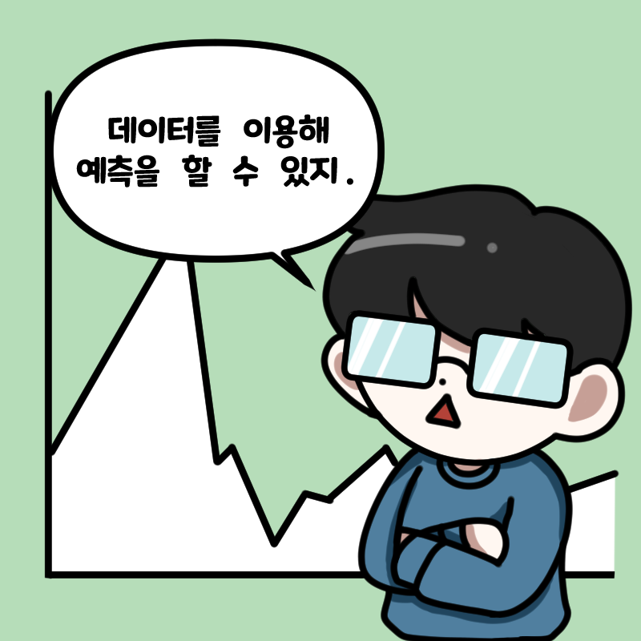
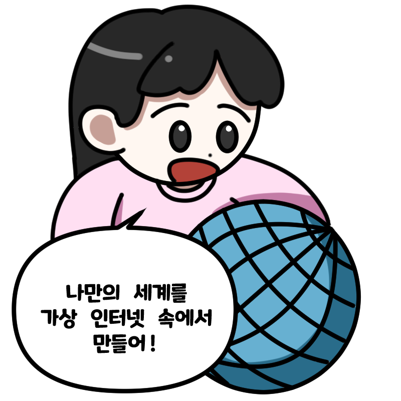
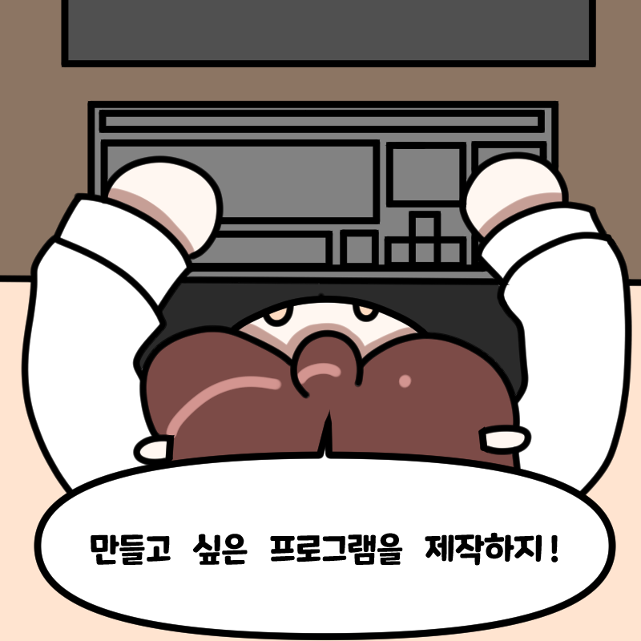

나의 IT적성은?
빅데이터
추천직업: 빅 데이터 엔지니어, 빅 데이터 분석가, 데이터 과학자

빅데이터란 세상에 존재하는 모든 정보를 말합니다. 빅데이터는 디지털 환경에서 빠르게 증가하여 그 규모도 매우 크지만, 데이터가 만들어지는 주기가 짧고, 속도도 빨라지고 있습니다. 그 결과 빅데이터를 분석해 가치 있는 정보로 만드는 것이 국가나 기업, 개인에게 있어 중요한 관심사가 되었습니다.
빅데이터와 관련된 직업은 거대한 규모의 데이터를 목적에 맞게 수집·분석·활용하고, 데이터에 숨어 있는 정보나 일정한 패턴을 찾아내 현상을 분석하며, 데이터를 통해 사람의 마음이나 세상의 흐름을 읽고, 심지어 미래를 예측하기도 합니다.
이런 사람들에게 추천해요!
- 수리적인 사고 능력이 우수한 사람
- 문제를 바라보는 시야가 넓은 사람
- 여러 분야에 관심을 두고 있는 사람
나의 IT적성은?
게임
추천직업: 게임 기획자, 게임 프로그래머, 게임 그래픽 디자이너
4차 산업혁명 시대를 이끌어 나가는 산업 중 하나인 게임 시장은 가파르게 성장 중입니다. 게임을 만드는 것은 게임을 플레이하는 것과 완전히 다른 일임을 알고 있는 것이 좋습니다. 여러 동료와 소통하며 작업하기 때문에 커뮤니케이션 능력이 필요합니다.
게임 기획자는 게임의 전반부를 기획하는 일을 합니다. 세부적인 부분 중 시나리오는 게임 시나리오 작가에게, 그래픽은 그래픽 디자이너에게, BGM과 같은 음악 부분은 게임 사운드 디자이너에게 일을 맡깁니다. 게임 프로그래머는 게임의 개발을 담당합니다. 게임 기획자는 이 모든 것에 대한 진행사항을 알고 있어야 하기 때문에 시야가 넓어야 하고, 코딩과 디자인 지식을 요하고 있으면 좋습니다.
이런 사람들에게 추천해요!
- 상상력이 풍부한 사람
- 끈기와 인내심을 가지고 있는 사람
- 게임에 대한 흥미를 가지고 있는 사람
나의 IT적성은?
정보 보안
추천직업: 서버 보안 전문가, 악성 코드 전문가, 모의 해킹 전문가

IT 발전 속도가 급격히 빨라지면서 개인정보부터 기업의 중요한 정보까지 유출될 위험성이 높아졌습니다. 서버와 시스템의 보안 취약점을 조사하고 이를 해결하는 분야인 정보 보안 관련 분야는 오래된 경력을 요구하지만, 중요한 분야 중 하나로 관심받고 있습니다.
만들어진 시스템을 먼저 해킹해보고 이에 대한 해결책을 제시하는 직업부터 백신 프로그램을 개발하는 직업까지 다양한 분야로 이루어져 있으며 이 모든 것은 개인이 행하는 것이 아닌 많은 사람과 협업해서 이루어지기 때문에 의사소통 능력이 필요합니다. 또한, 세심한 성격을 가지고 있어 문제점을 잡아낼 수 있어야 합니다
이런 사람들에게 추천해요!
- 논리적인 사고를 가진 사람
- 뛰어난 독해 능력을 가진 사람
- 꼼꼼한 사람
나의 IT적성은?
컴퓨터 교육
추천직업: 초중학교 정보 선생님, 컴퓨터 전문 강사

4차 산업 혁명으로 인해 초중고 학생들은 의무적으로 코딩 교육을 받아야 합니다. 단순히 프로그래밍 언어에 대한 전반적인 이해가 아닌 창의적인 문제 해결 능력을 길러주어 코딩에 대한 전반적인 지식을 쉽게 전달해야 합니다
컴퓨터를 누군가에게 알려주는 직업은 단순히 지식 전달만 하는 것이 아닌, 학생의 수준에 따라 지식을 전달해야 합니다. 또한 다양한 질문에 대한 답을 해야 하므로 꾸준한 컴퓨터 공부가 필요합니다. 4차 산업 혁명으로 발전하고 있는 IT 분야의 인재 양성에 있어서 중요한 역할을 맡고 있습니다.
이런 사람들에게 추천해요!
- 지식에 대한 전달 능력이 있는 사람
- 원활한 의사소통 능력을 갖춘 사람
- 사명감과 책임감이 있는 사람
- 남에 대한 배려, 독립성, 리더십이 있는 사람
나의 IT적성은?
증강·가상 현실
추천직업: 공간스캐닝 소프트웨어 개발자, 가상현실전문가, 증강현실전문가

가상현실은 100% 가상 세계를 기반으로 하며, 증강현실은 현실 세계를 기반으로 가상의 정보를 일부 가미하는 기술을 말합니다. 증강·가상현실을 통해 현실감이 높은 체험을 할 수 있으며 향후 군사, 교육, 의료, 제조와 같은 산업 영역에 확산되어 활용될 것으로 보입니다.
현실과 가상이 구분되지 않게 만드는 몰입감, 다시 말해서 물건을 만지거나 던지는 행위를 했을 때 현실과 같은 느낌을 끌어내는 상호작용이 있어야 합니다. 이것을 재현하는 과정에서 무한한 상상력과 창의력이 필요하며, 현실과 가상의 세계를 종합적으로 보는 분석력이 필요합니다.
이런 사람들에게 추천해요!
- 상상력이 풍부한 사람
- 공간에 대한 시야가 넓은 사람
- 새로운 것에 대해 도전하는 것을 좋아하는 사람
나의 IT적성은?
개발자
추천직업: 소프트웨어 개발자, 임베디드 개발자

하드웨어를 제어할 수 있는 프로그램과 특수 목적으로 사용되는 응용프로그램을 개발하거나, 애플리케이션, 프레임워크, 기타 소프트웨어 구성 요소의 개발을 주로 합니다. 분야에 따라서 개발하는 종류는 조금씩 달라지지만, 기본적으로 혼자서 일하는 것보다는 다른 사람과 협업해서 이루어지는 경우가 많습니다.
컴퓨터 관련 개발직을 하기 위해서는 대학교의 컴퓨터공학 관련 학과를 졸업하는 것이 유리합니다. 개발에 필요한 C언어, JAVA와 같은 프로그래밍 언어, 데이터베이스, 소프트웨어공학 이론 등을 공부하고 실제 소프트웨어 개발 실습을 하는 것을 추천합니다.
이런 사람들에게 추천해요!
- 문제 푸는 것을 좋아하는 사람
- 원활한 의사소통 능력을 가진 사람
- 새로운 것을 도전하는 것을 좋아하는 사람
- 무언가에 몰입하는 경향이 강한 사람